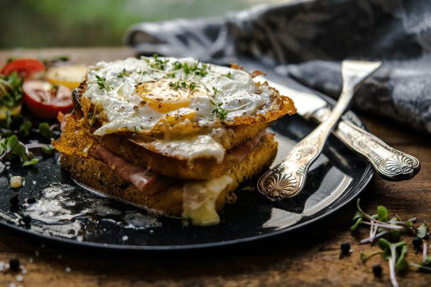
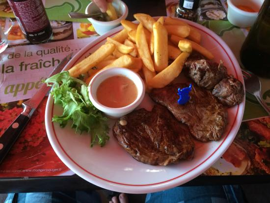

Qui somme nous ?
Le Pétanque Bistrot : Là où la convivialité et la cuisine se rencontrent
Le Pétanque Bistrot est bien plus qu'un simple restaurant ; c'est un véritable lieu de rassemblement pour les amoureux de la pétanque et de la bonne cuisine méditerranéenne. Fondé par un groupe de passionnés de la boule et de la gastronomie provençale, notre bistrot est un endroit chaleureux où les saveurs authentiques de la région se mêlent à l'esprit de camaraderie de la pétanque.
Notre Histoire :
Fondé en 2010 par Jean-Luc Dupont et ses amis, Le Pétanque Bistrot est né de la volonté de créer un lieu unique où la tradition de la pétanque, profondément enracinée dans la culture marseillaise, se marie harmonieusement avec une cuisine exquise. Jean-Luc, un passionné de pétanque depuis sa jeunesse, a voulu partager sa passion avec d'autres amateurs tout en leur offrant une expérience culinaire exceptionnelle.
Notre Cuisine :
Au Pétanque Bistrot, notre cuisine est inspirée des saveurs méditerranéennes les plus délicieuses. Notre chef, Marie Delacroix, est une experte dans l'art de préparer des plats provençaux classiques avec une touche contemporaine. Les poissons frais, les herbes aromatiques et les produits locaux sont à l'honneur dans nos créations culinaires.
Ambiance :
Notre bistrot propose une atmosphère décontractée et conviviale, où les joueurs de pétanque chevronnés et novices se retrouvent pour des parties animées sur notre terrain de pétanque en plein air. Nos clients peuvent déguster de délicieux plats tout en s'immergeant dans l'ambiance ensoleillée de la Provence.
Venez nous rejoindre :
Que vous soyez un passionné de la pétanque ou simplement à la recherche d'une excellente cuisine méditerranéenne, Le Pétanque Bistrot vous accueille à bras ouverts. Venez partager des moments de convivialité, de jeu et de délices culinaires avec nous, et découvrez pourquoi notre bistrot est devenu un véritable joyau de la scène gastronomique marseillaise. Au Pétanque Bistrot, nous célébrons la bonne vie, la pétanque et la gastronomie provençale, le tout dans une ambiance authentique et accueillante. Rejoignez-nous pour une expérience inoubliable..

- 
- 

Pourquoi ?
Passion pour la pétanque : >L'une des principales raisons de la création du restaurant était la passion profonde de notre fondateur, Jean-Luc Dupont, pour la pétanque. Jean-Luc a toujours été un amateur enthousiaste de ce jeu traditionnel provençal, et il souhaitait partager cette passion avec d'autres personnes et créer un lieu où les amateurs de pétanque pourraient se réunir, jouer et s'amuser. Célébration de la culture marseillaise : Marseille est une ville emblématique de la culture méditerranéenne, et la pétanque est profondément enracinée dans cette culture. Le restaurant visait à célébrer cette riche tradition locale en offrant aux visiteurs une expérience authentique de Marseille, de sa cuisine à sa convivialité. Gastronomie provençale de qualité : Marseille et la Provence sont réputées pour leur cuisine délicieuse et leurs produits locaux de qualité. Le Pétanque Bistrot souhaitait mettre en valeur ces saveurs authentiques en proposant une cuisine méditerranéenne exceptionnelle préparée avec des ingrédients frais et locaux. La création du restaurant était donc une opportunité de partager ces délices culinaires avec les clients. Création d'une ambiance conviviale : En plus de la pétanque et de la cuisine, le restaurant visait à créer une atmosphère conviviale et accueillante. Il s'agit d'un lieu où les gens peuvent se détendre, se retrouver entre amis et en famille, jouer à la pétanque ou simplement savourer de délicieux repas dans un cadre décontracté. Partage d'une passion : En créant Le Pétanque Bistrot, l'objectif était également de partager une passion personnelle avec la communauté locale et les visiteurs de Marseille. C'était une occasion pour les fondateurs et l'équipe du restaurant de faire ce qu'ils aiment tout en offrant une expérience unique à leurs clients. En résumé, Le Pétanque Bistrot a été créé pour combiner la passion pour la pétanque, la célébration de la culture marseillaise, la dégustation de délicieuse cuisine provençale et la création d'une ambiance conviviale pour les clients. C'était une entreprise motivée par l'amour de la tradition, de la gastronomie et du jeu, avec l'objectif de partager cette passion avec d'autres.